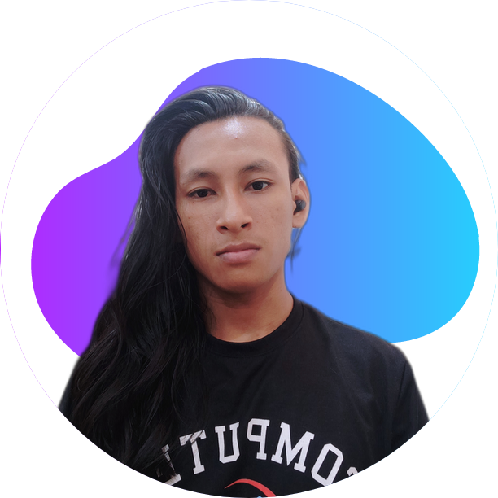

Daniel L Souza
Mobile developer
Tecnologias
- Java
- Kotlin
- Git
- html
- css
- python
Qualificações
- Cursando Ciência da computação - UFOPA
My Projects
Veja todosRecent Posts
Erro adb devices no Genymotion e Android Studio (Kotlin)
2 anos atrásErro adb devices no Genymotion e Android Studio (Kotlin)
- #kotlin
- #Android Studio
- #genimotion
- #genimotion